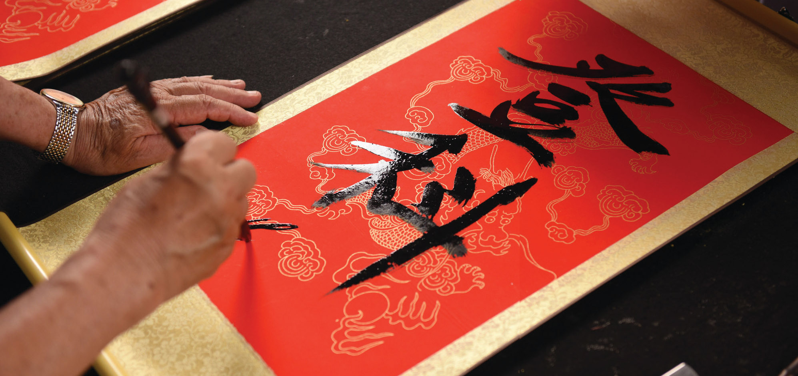
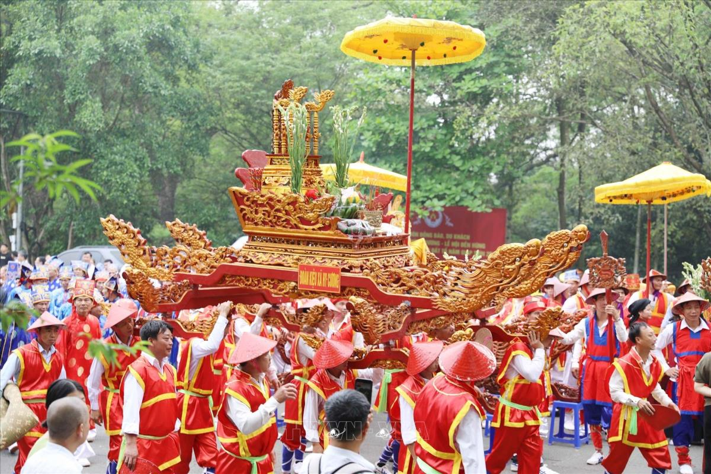
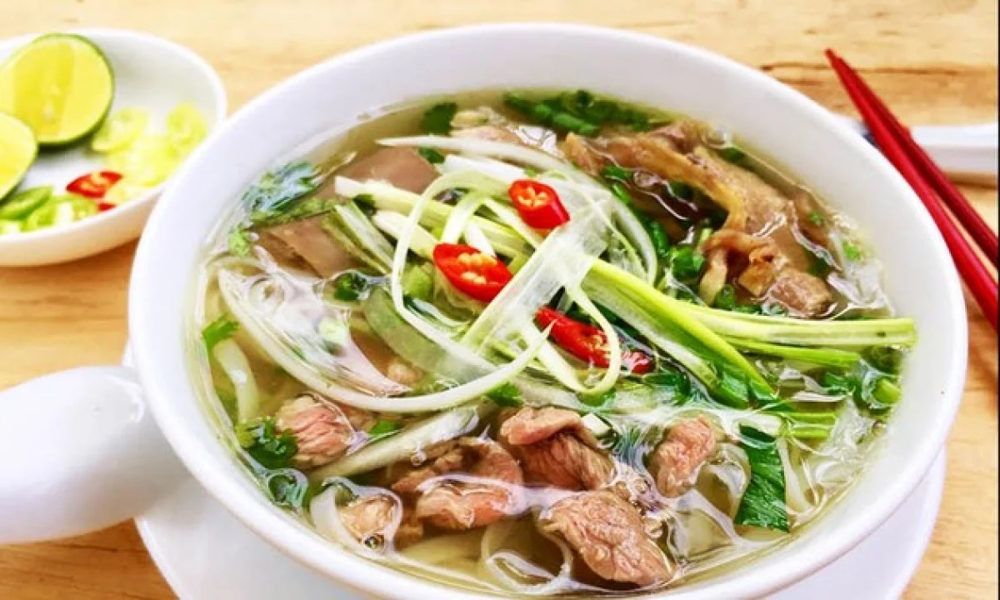
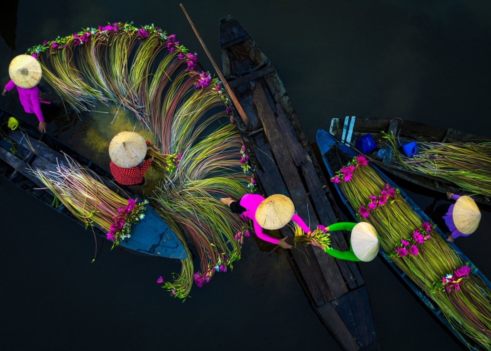
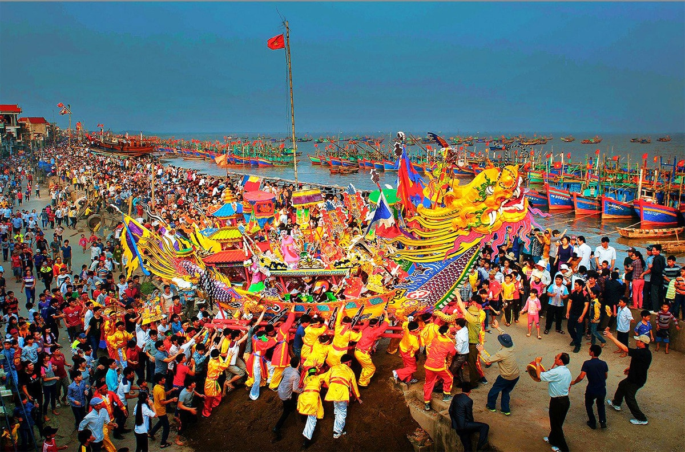

Tinh hoa ngàn năm - Kết tinh từ đất trời
Áo dài là trang phục truyền thống, biểu tượng của vẻ đẹp dịu dàng, thanh lịch của người phụ nữ Việt. Trải qua hàng trăm năm, áo dài vẫn giữ được nét đẹp cổ điển mà vẫn thích ứng với thời đại.
Áo dài xuất hiện trong các dịp lễ tết, cưới hỏi, ngày khai trường và là trang phục biểu diễn nghệ thuật truyền thống.

Thư pháp Việt Nam là nghệ thuật viết chữ, thể hiện tâm hồn, tính cách và triết lý nhân sinh của người viết. Từ chữ Hán Nôm đến chữ Quốc ngữ, thư pháp vẫn là một nét đẹp văn hóa không thể thiếu.
Mỗi dịp Tết đến, người dân thường xin chữ ông đồ như một nét đẹp văn hóa cầu may mắn, bình an.

Việt Nam có hàng nghìn lễ hội lớn nhỏ trong năm, phản ánh đời sống tâm linh và văn hóa cộng đồng.

Ẩm thực Việt Nam nổi tiếng với sự tinh tế, cân bằng âm dương, đậm đà hương vị quê hương.


"Uống nước nhớ nguồn" - Đạo lý làm người sâu sắc của dân tộc Việt Nam. Thờ cúng tổ tiên là nét đẹp văn hóa tâm linh, thể hiện lòng hiếu thảo và sự tri ân với những người đã khuất.
"Văn hoá Việt Nam - Kết tinh từ ngàn năm văn hiến
Hội tụ tinh hoa đất trời - Lan toả hồn Việt muôn phương"